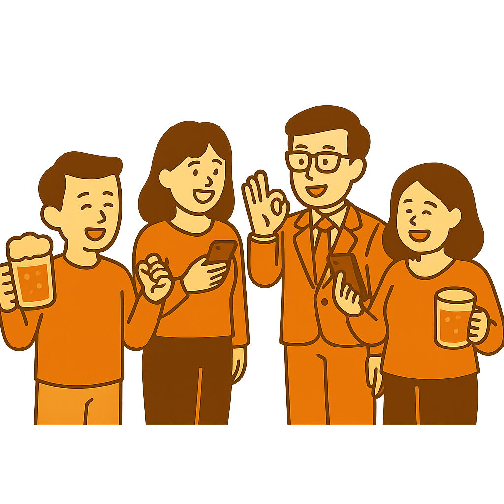

幹事の「面倒くさい」をゼロに。
KanziPlus（カンジプラス）

KanziPlus（カンジプラス）は、これまで多数の幹事を経験してきた開発者による、幹事のためのサービスです。
「傾斜割り勘」「履歴の保存」など、今まさに欲しかった機能を集約。飲み会、旅行、イベント…どんな場面でも使えて、これからも幹事を助ける機能をどんどん追加していきます。
「誰も幹事をやりたがらず、会が開けなかった」。そんな経験から生まれたKanziPlusが、あなたの幹事ライフを支えます。